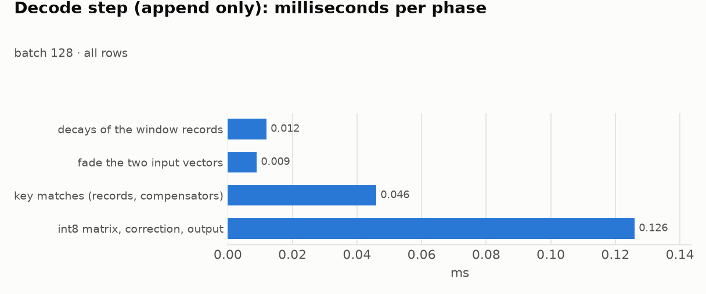
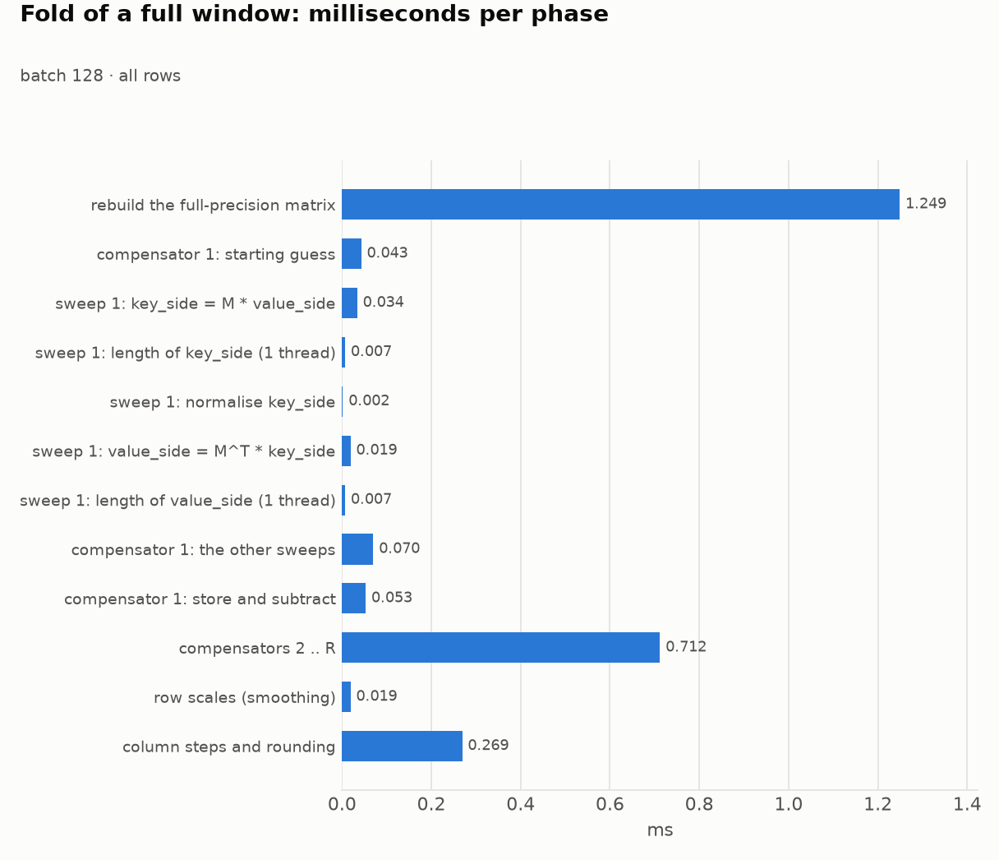
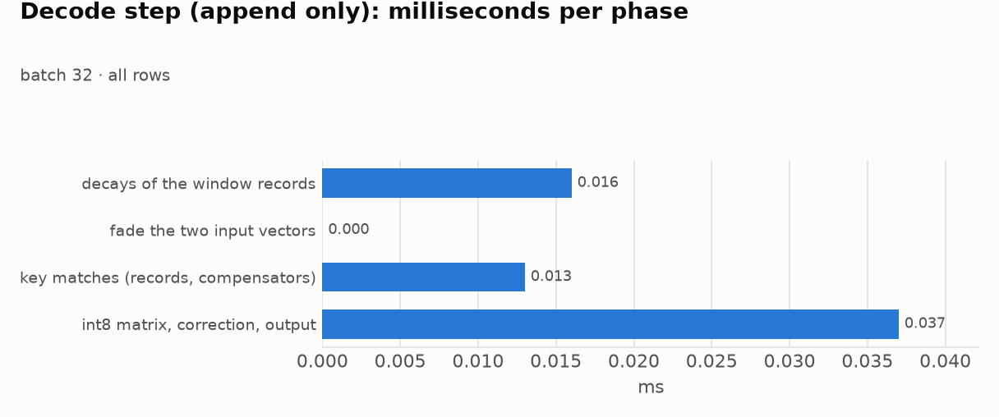
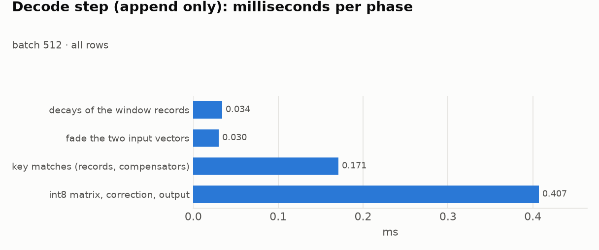
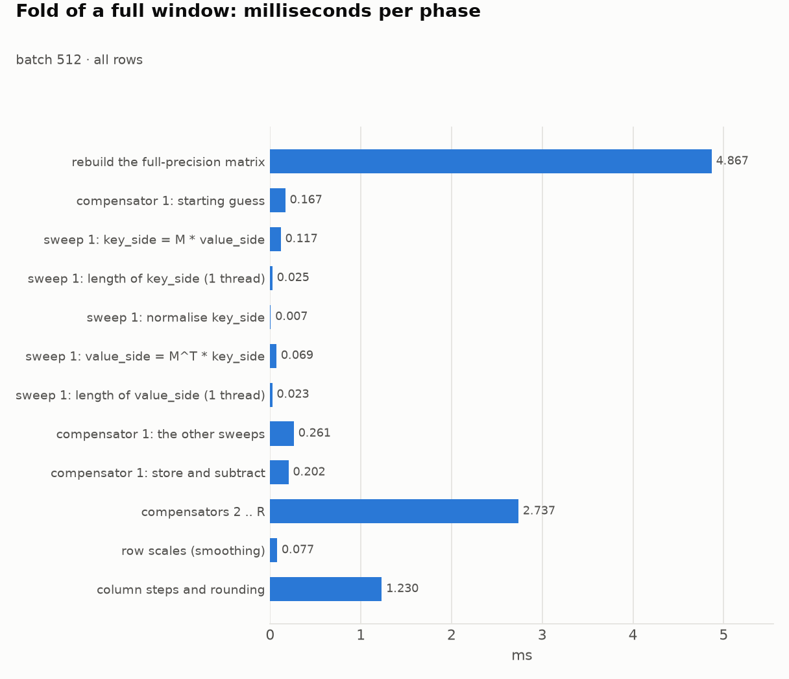

Where the kernel's time goes
The kernel is stopped at named points of its work; a phase's time is the difference between two stops. Medians of 30 calls, state restored before every call.
Batch 128, 2 sweeps final

| Phase | ms | Share | Cumulative ms | 10% .. 90% of calls |
|---|---|---|---|---|
| decays of the window records | 0.012 | 6.2% | 0.012 | 0.012 .. 0.012 |
| fade the two input vectors | 0.009 | 4.7% | 0.021 | 0.020 .. 0.021 |
| key matches (records, compensators) | 0.046 | 24.0% | 0.066 | 0.066 .. 0.067 |
| int8 matrix, correction, output | 0.126 | 65.6% | 0.192 | 0.191 .. 0.193 |

| Phase | ms | Share | Cumulative ms | 10% .. 90% of calls |
|---|---|---|---|---|
| rebuild the full-precision matrix | 1.249 | 50.3% | 1.249 | 1.247 .. 1.251 |
| compensator 1: starting guess | 0.043 | 1.7% | 1.291 | 1.290 .. 1.295 |
| sweep 1: key_side = M * value_side | 0.034 | 1.4% | 1.325 | 1.323 .. 1.328 |
| sweep 1: length of key_side (1 thread) | 0.007 | 0.3% | 1.332 | 1.330 .. 1.335 |
| sweep 1: normalise key_side | 0.002 | 0.1% | 1.333 | 1.332 .. 1.337 |
| sweep 1: value_side = M^T * key_side | 0.019 | 0.8% | 1.353 | 1.351 .. 1.354 |
| sweep 1: length of value_side (1 thread) | 0.007 | 0.3% | 1.360 | 1.358 .. 1.362 |
| compensator 1: the other sweeps | 0.070 | 2.8% | 1.430 | 1.428 .. 1.431 |
| compensator 1: store and subtract | 0.053 | 2.1% | 1.483 | 1.481 .. 1.486 |
| compensators 2 .. R | 0.712 | 28.7% | 2.194 | 2.191 .. 2.198 |
| row scales (smoothing) | 0.019 | 0.8% | 2.213 | 2.210 .. 2.216 |
| column steps and rounding | 0.269 | 10.8% | 2.482 | 2.479 .. 2.484 |
Per decode step, averaged over a window: 0.405 ms.
Batch 32, 2 sweeps final

| Phase | ms | Share | Cumulative ms | 10% .. 90% of calls |
|---|---|---|---|---|
| decays of the window records | 0.016 | 25.4% | 0.016 | 0.015 .. 0.021 |
| fade the two input vectors | -0.003 | -4.8% | 0.013 | 0.012 .. 0.018 |
| key matches (records, compensators) | 0.013 | 20.6% | 0.026 | 0.025 .. 0.031 |
| int8 matrix, correction, output | 0.037 | 58.7% | 0.063 | 0.062 .. 0.077 |
| Phase | ms | Share | Cumulative ms | 10% .. 90% of calls |
|---|---|---|---|---|
| rebuild the full-precision matrix | 0.328 | 51.2% | 0.328 | 0.324 .. 0.341 |
| compensator 1: starting guess | 0.010 | 1.6% | 0.338 | 0.335 .. 0.342 |
| sweep 1: key_side = M * value_side | 0.007 | 1.1% | 0.345 | 0.342 .. 0.353 |
| sweep 1: length of key_side (1 thread) | 0.005 | 0.8% | 0.349 | 0.345 .. 0.352 |
| sweep 1: normalise key_side | -0.001 | -0.2% | 0.348 | 0.345 .. 0.360 |
| sweep 1: value_side = M^T * key_side | 0.004 | 0.6% | 0.353 | 0.351 .. 0.360 |
| sweep 1: length of value_side (1 thread) | 0.001 | 0.2% | 0.354 | 0.351 .. 0.359 |
| compensator 1: the other sweeps | 0.020 | 3.1% | 0.374 | 0.370 .. 0.383 |
| compensator 1: store and subtract | 0.013 | 2.0% | 0.387 | 0.383 .. 0.397 |
| compensators 2 .. R | 0.182 | 28.4% | 0.569 | 0.564 .. 0.577 |
| row scales (smoothing) | 0.003 | 0.5% | 0.572 | 0.568 .. 0.582 |
| column steps and rounding | 0.069 | 10.8% | 0.641 | 0.637 .. 0.653 |
Per decode step, averaged over a window: 0.228 ms.
Batch 512, 2 sweeps final

| Phase | ms | Share | Cumulative ms | 10% .. 90% of calls |
|---|---|---|---|---|
| decays of the window records | 0.034 | 5.3% | 0.034 | 0.034 .. 0.034 |
| fade the two input vectors | 0.030 | 4.7% | 0.064 | 0.063 .. 0.064 |
| key matches (records, compensators) | 0.171 | 26.6% | 0.234 | 0.234 .. 0.234 |
| int8 matrix, correction, output | 0.407 | 63.4% | 0.642 | 0.640 .. 0.643 |

| Phase | ms | Share | Cumulative ms | 10% .. 90% of calls |
|---|---|---|---|---|
| rebuild the full-precision matrix | 4.867 | 49.7% | 4.867 | 4.864 .. 4.870 |
| compensator 1: starting guess | 0.167 | 1.7% | 5.035 | 5.031 .. 5.039 |
| sweep 1: key_side = M * value_side | 0.117 | 1.2% | 5.151 | 5.149 .. 5.157 |
| sweep 1: length of key_side (1 thread) | 0.025 | 0.3% | 5.176 | 5.172 .. 5.180 |
| sweep 1: normalise key_side | 0.007 | 0.1% | 5.184 | 5.180 .. 5.188 |
| sweep 1: value_side = M^T * key_side | 0.069 | 0.7% | 5.253 | 5.249 .. 5.258 |
| sweep 1: length of value_side (1 thread) | 0.023 | 0.2% | 5.276 | 5.274 .. 5.281 |
| compensator 1: the other sweeps | 0.261 | 2.7% | 5.537 | 5.534 .. 5.542 |
| compensator 1: store and subtract | 0.202 | 2.1% | 5.739 | 5.736 .. 5.744 |
| compensators 2 .. R | 2.737 | 28.0% | 8.477 | 8.471 .. 8.486 |
| row scales (smoothing) | 0.077 | 0.8% | 8.554 | 8.544 .. 8.564 |
| column steps and rounding | 1.230 | 12.6% | 9.784 | 9.780 .. 9.789 |
Per decode step, averaged over a window: 1.289 ms.
Source: profile_*.txt. A difference smaller than the 10% .. 90% spread is not a finding.
Generated 2026-11-13 11:17 from results/run-quick-einstein-v4 by reports/generate_reports.py. All reports.